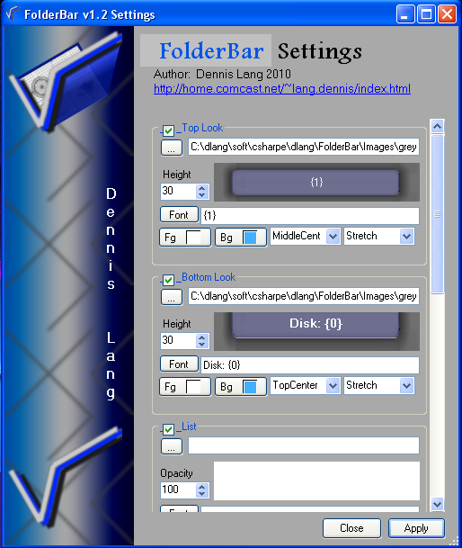
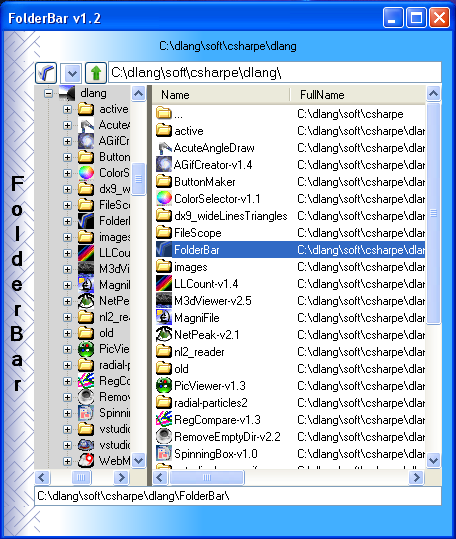
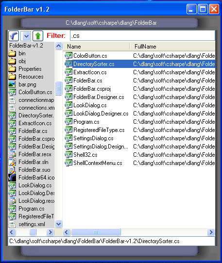
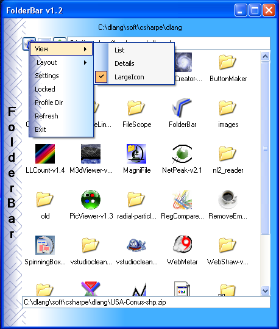
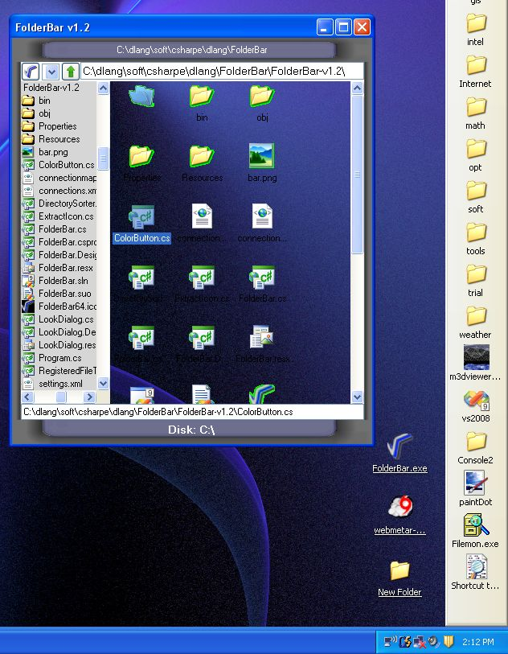
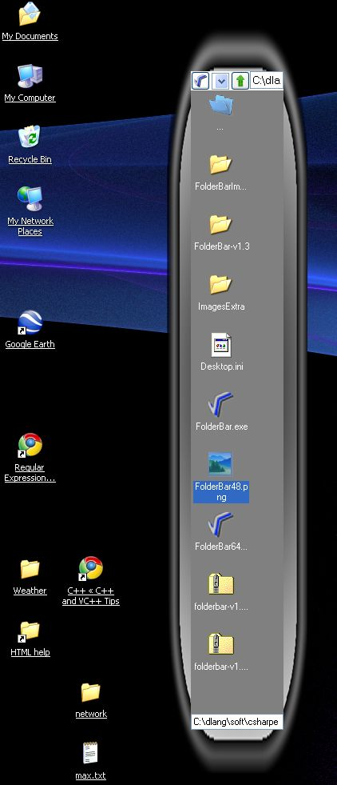
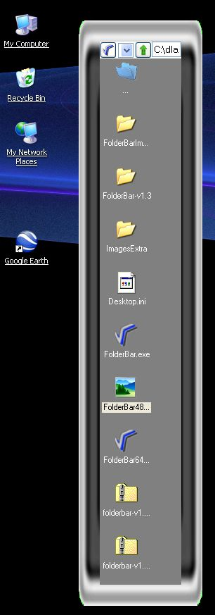
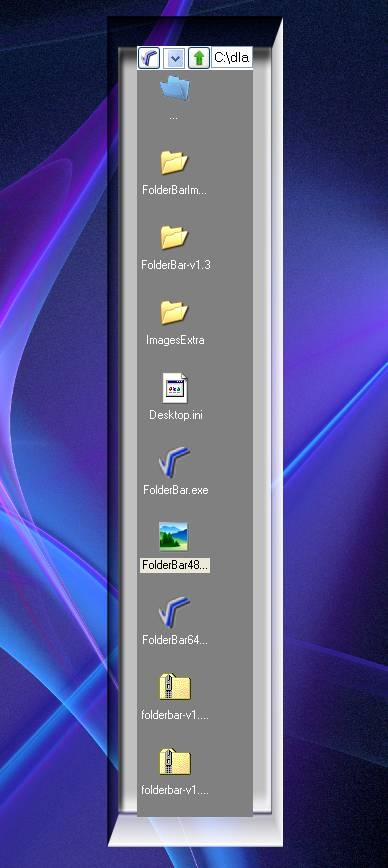
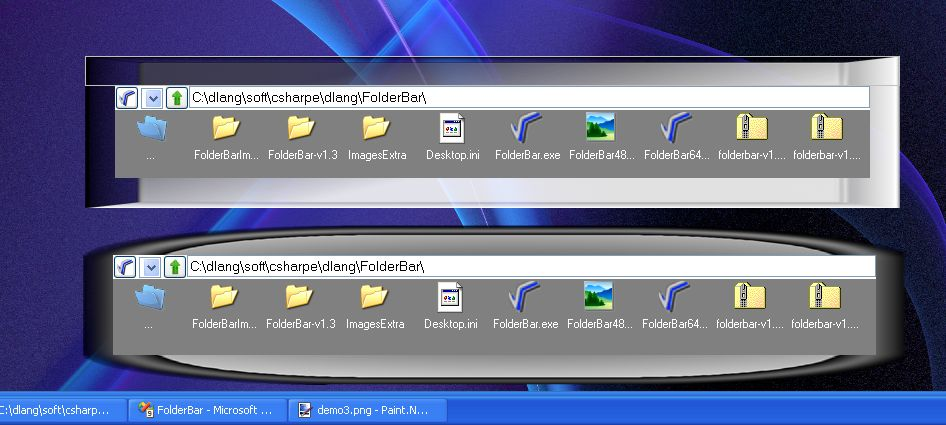
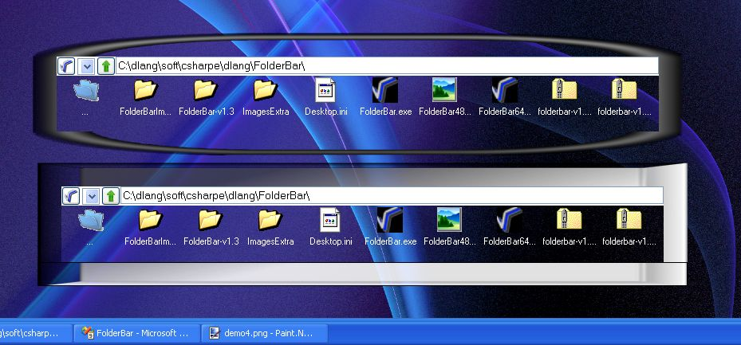

Source Code and Performance Metrics
landenlabs.app@gmail.com
Linkedin: http://www.linkedin.com/pub/1/119/293
Updated: 27-Feb-2010
|
Welcome to Dennis Lang's Source Code and Performance Metrics
landenlabs.app@gmail.com Updated: 27-Feb-2010 |
C# - FolderBar v1.4 - Compact File Explorer to be used as a Tool Bar (March 2010)
|
|
C# Application emulates File Explorer but adds some eye candy controls to set pictures and colorize the four sides of the viewer. I created FileBar because Windows7 no longer supports multiple toolbars. FileBar is similar to file explorer in that you can navigate to directories and view the information as Icons, List or Detailed. When you exit FileBar it saves its size, position, directory and look to a profile.fb file in the windows application directory. If you select Profile from the context menu it will show you all the saved profiles. If you click on a .fb file it will launch FileBar and it will appear with its old settings.
Command line options:
| FileBar.exe directoryPath | Show directory files and try and load profile associated with directory, |
| FileBar.exe profile.fb | Load saved profile, restoring directory and look. |
| -autoStart | Launch FolderBar for every saved profile. |
You can filter the file list by pressing control-F. Any files which contain the filter text will remain. Enter an empty filter and hit enter to restore the full list. Press escape to restore the file path bar.
When you enter text in the file bar it will provide auto completion suggestions. Press TAB to select first choice.
Pressing the FileBar button will toggle the tree navigation panel on or off. Right click on the button to access the context menu. Right click on any of the four panels will display the context menu. Control click on top panel to toggle windows Frame. Click and drag top panel to move dialog around desktop.
Settings Dialog, pick images, colors, text and fontsSpecial text: {0} for root director, {1} for full directory path. |
|  |
Navigation tree and Detail file view |
Control-F enables Filter controlEscape to close filter, enter black filter restore all files. |
|  |
Large Icon view |
|
|
Transparent BackgroundBy setting any of the panels background to pure green, it becomes transparent.This image shows a side effect of leaving the icons at 32bits. Samples further down set icon style to 8bit to avoid the green halo. |
|  |
Various single Main image looks | ||
|  |  |  |
Some transparent and solid looks |
|  |
|  |